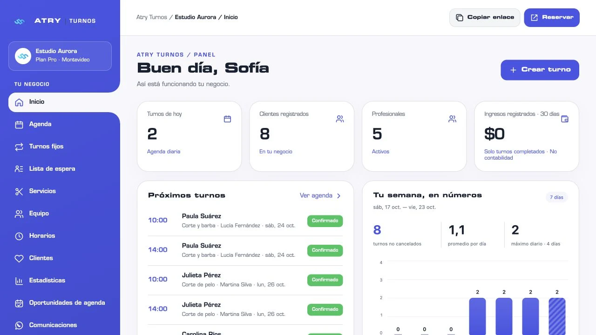
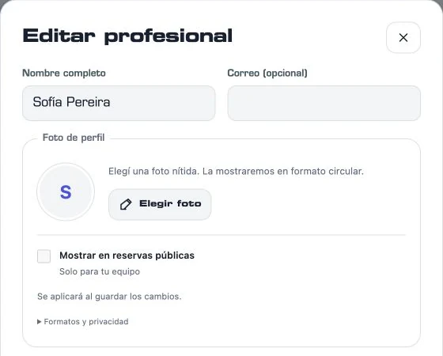
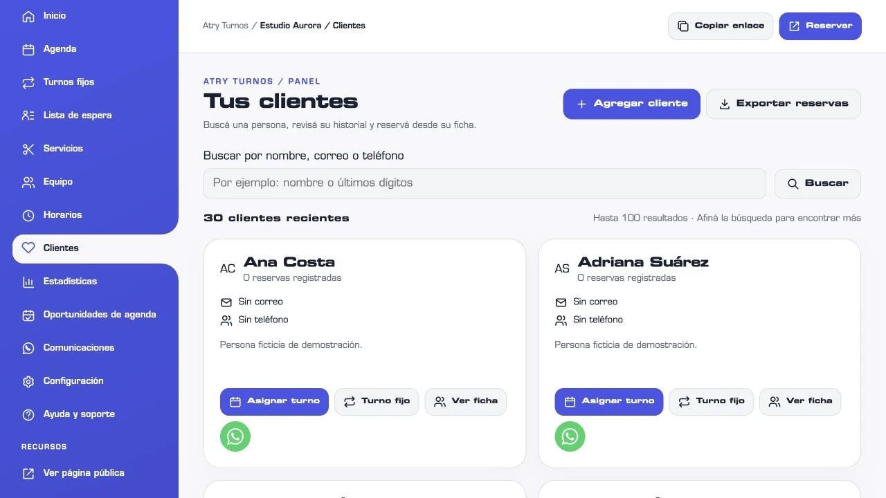

Menos buscar.
Más encontrar.
Tu día, semana o mes, con horarios y estados claros. Desde Negocio, filtrá también por profesional.
Conocé la agendaTU NEGOCIO. TU TIEMPO. TU ESPACIO.
Agenda y reservas online para profesionales y negocios de servicios.
Organizá tus horarios, clientes y equipo. Compartí tu enlace de reservas y prepará tus mensajes de WhatsApp desde un mismo lugar.
Sin cuenta para probar · Sin instalar aplicaciones

NO HACE FALTA IMAGINÁRSELO.
Estas son pantallas de la aplicación.
Después, las podés recorrer vos.
Próximos turnos y actividad del negocio. Una primera mirada para saber por dónde empezar. Resumen y estadísticas desde Negocio.
Pantallas reales · Datos ficticiosTu día, semana o mes, con horarios y estados claros. Desde Negocio, filtrá también por profesional.
Conocé la agendaHabilitá varios servicios en una visita. ATRY busca un recorrido consecutivo con profesionales disponibles y lo comprueba al confirmar.
Probá una reservaEmpezá con la identidad ATRY. Negocio suma logo y colores propios; Pro amplía la personalización del panel y las reservas.
Encontrá tu planATRY COMUNICACIÓN / WHATSAPP MANUAL
Menos copiar y pegar.
Más tiempo para atender bien.
Confirmá una reserva, recordá un turno o avisá un cambio. Las plantillas toman el cliente, servicio, fecha y profesional de la reserva. Vos revisás el texto y decidís enviarlo desde WhatsApp.
En los tres planes. WhatsApp manual no consume el cupo de correos. Las notificaciones automáticas de Brevo funcionan por separado, según tu plan y configuración.
Explorá Comunicación en la demo ↗PERSONAS, NO SOLO HORARIOS.
La ficha de cada cliente, sus visitas y el acceso a WhatsApp, a mano. Y para tus profesionales, una foto de perfil opcional que ayuda a reconocer quién atiende.
Elegís si la foto aparece en las reservas públicas. Si no cargás una, se mantienen las iniciales. Desde Individual, podés configurar tu propio perfil; los equipos crecen con Negocio y Pro.


Pantalla real de Clientes · Datos ficticios de Estudio Aurora.
NO ES CUALQUIER NEGOCIO. ES EL TUYO.
Tu color. Tu nombre. Tu manera de recibir.
Probá cómo se siente llevar tu marca a ATRY.
La identidad original de ATRY. Clara, violeta y lista para empezar.
Aplicación real · Demo Pro · Datos ficticiosTu marca acompaña cada reserva.
EL MEJOR RECORRIDO ES EL TUYO.
Elegí el escenario que se parece a tu negocio.
Entrás al producto, sin registrarte.
Recorré un negocio con tres profesionales. Filtrá sus agendas, editá un servicio y mirá cómo se organiza una visita.
Es un espacio ficticio, solo para explorar. No crea cuentas ni reservas reales, no envía mensajes y no genera cargos. Los cambios se descartan al recargar; cada pestaña mantiene su propia simulación.
DEL PRIMER PASO AL PRIMER TURNO.
Cargá servicios, duraciones, horarios y pausas.
Compartí tu enlace. Tus clientes eligen los horarios disponibles.
Gestioná las reservas desde la computadora o el teléfono.
EL ESPACIO JUSTO PARA VOS.
Suscripción mensual por negocio.
Precios en pesos uruguayos.
TU PROPIA AGENDA
$790 UYU / mes
Atendés por tu cuenta.
1 profesional.
Sin correos automáticos de reservas.
Probar sin cuentaPARA CRECER EN EQUIPO
$1.490 UYU / mes
Coordinás un equipo.
Hasta 4 profesionales activos.
Confirmaciones y recordatorios por correo.Hasta 300 correos por ciclo mensual.
Probar sin cuentaMÁS ESPACIO PARA GESTIONAR
$2.490 UYU / mes
Gestionás más profesionales y recursos.
Hasta 10 profesionales activos.
Confirmaciones y recordatorios por correo.Hasta 900 correos por ciclo mensual.
Probar sin cuentaTodos incluyen las 6 plantillas editables de ATRY, mensajes manuales por WhatsApp y su bandeja de recordatorios. Las plantillas propias se suman a las de ATRY; en Pro, 100 es el límite técnico.
La contratación y la activación se coordinan con ATRY. Tratamiento impositivo pendiente de confirmación antes de contratar. El cupo se comparte entre confirmaciones, recordatorios y otros correos operativos, requiere configuración y no garantiza entrega. No incluye cobros en línea ni mensajes automáticos de WhatsApp.
ELEGIR TAMBIÉN ES ENTENDER.
Tu negocio merece información concreta.
Sí. Las tres demos son independientes y funcionan en memoria. Podés explorar el panel, crear turnos de prueba y conocer los límites de cada plan. No se envían mensajes ni se guardan esos cambios en un negocio real.
Individual está pensado para un profesional: agenda, servicios, horarios, clientes y un enlace de reservas. No agrega controles de equipo que no necesitás.
Si habilitás esa opción en las reglas del negocio, puede elegir hasta seis servicios distintos y ordenarlos. El sistema busca un recorrido consecutivo con profesionales habilitados y disponibles. La visita se confirma completa; si los tiempos o bloqueos no permiten combinarla, ese recorrido no se ofrece.
Podés acceder desde el navegador del teléfono o de la computadora. Todos los planes parten de la identidad ATRY; Negocio suma logo y colores propios, y Pro ofrece una personalización más amplia.
Creás tu cuenta y tu negocio, solicitás el plan desde la aplicación y coordinás con ATRY por WhatsApp. La solicitud no cambia por sí sola tu suscripción. ATRY confirma la habilitación después de coordinar y verificar el pago.
No. ATRY prepara el mensaje con los datos de la reserva. Vos lo revisás y lo enviás desde tu sesión de WhatsApp o WhatsApp Web. La bandeja permite organizar pendientes, pospuestos y gestionados; esos estados no confirman entrega ni lectura. Está disponible en los tres planes y no consume correos de Brevo.
Los correos operativos sí pueden enviarse automáticamente, según configuración y cuota: Individual no los incluye; Negocio dispone de hasta 300 y Pro hasta 900 por ciclo mensual. Aceptación del proveedor no significa entrega confirmada. Activar WhatsApp no cambia esas preferencias. No hay cobros en línea y las demos no envían mensajes.
HACÉ LUGAR PARA LO QUE VIENE.
Empezá por verlo. Seguí por hacerlo tuyo.
Diseñado con intención. Por ATRY Agency.